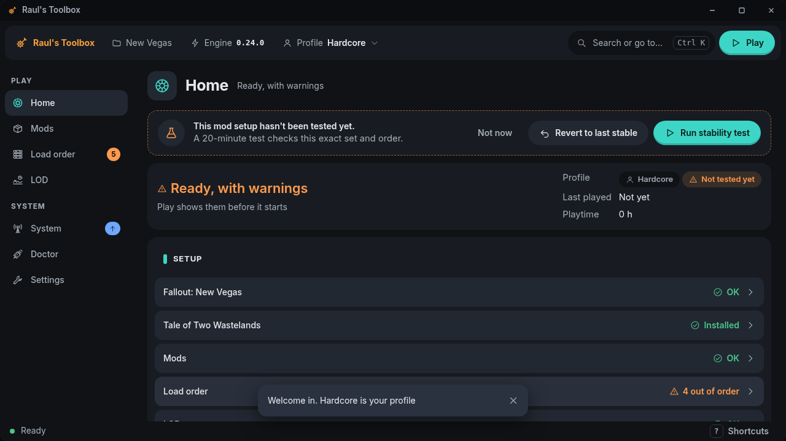

Wiki
Modding New Vegas without the fRUSTration.
Raul's tRusty Toolbox, or raul, is one app that sets up Fallout: New Vegas with your mods and starts the game. It works on Linux, Windows and macOS, and it never changes your game folder.
You need your own copy of Fallout: New Vegas. raul ships no game files.
What it does for you
- Finds your game.
- Adds Tale of Two Wastelands, if you want it. This is optional.
- Installs your mods and keeps a list of which are on.
- Sorts the load order, so mods that need each other load in the right order.
- Builds the distant view, so far-away land matches your mods.
- Starts the game on the built-in engine, nv-rs.
Where to go next
- Getting started: download and install raul.
- Using the Toolbox: the pages of the window, one by one.
- Features: what raul can do, in one list.
- Plans and roadmap: where the project is heading.
- Components: the five parts raul is made of.
- FAQ: short answers.
- Contributing: how changes are made.
You can also try the window in your browser. The clickable demo is the design of the app with made-up data, and the guided tour walks you through it step by step.
How far along it is
The first releases are out for Linux, Windows and macOS. They are early versions. Windows and macOS still need a full test on real computers, and your computer may warn that the download comes from an unknown maker, because it is not signed yet.

The Home page as designed in the demo. The current release has a Home page too, with a similar check list.